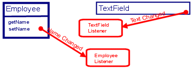
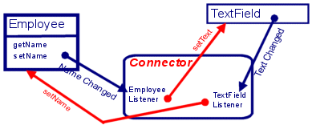

-
Interface Summary Interface Description OAJfcComponent -
Class Summary Class Description ComboBoxPopupMenuListener OAAlert OAAutoCompleteTextField OAButton OAButtonToolBar Used to have a toolbar with a buttons for the first (max) amount of objects in a hub.OACalendarComboBox 20180629 This is used by OABuilder codegen for objects that have calendar=true It is used by objects that have a ONE link to an object (calendar) with a date field.OACheckBox OAColorComboBox OAColorIcon Used to create a colored iconOAColorPopup Popup window that displays a panel of colors to select from.OAColorSplitButton SplitButton that includes a dropdown color chooser.OAComboBox OAComboBoxEditor Used by OAComboBox to set an editor component.OACommand Depreciated - use OAButton insteadOAConsole Acts as a console to display and scroll changes to a property.OACustomComboBox OADateChooser Popup calendar component.OADateComboBox ComboBox that has a calendar component display for the dropdown component.OAFileChooser JFileChooser subclass.OAFileCopyProgressBar JProgressBar component used to copy a file, and visually display the progress.OAFormattedTextField OAFtpProgressBar JProgressBar component used to receive a file using FTP, and visually display the progress.OAFunctionLabel Uses OAFunction to update a label.OAJfcUtil OALabel OALabelWithButton OALayeredPane Not quite ready: the comp still sometimes shows on top of the top panel.OAList OAMenuItem OAMonthCacheCalendar<F extends com.viaoa.object.OAObject> A month calendar that uses objects from cache.OAMonthCalendar<F extends com.viaoa.object.OAObject,T extends com.viaoa.object.OAObject> UI for displaying items in a Calendar.OAMultiButtonSplitButton Manages multiple buttons to be choosen from a dropdown, displaying an active button.OAOutlookBar A JOutlookBar provides a component that is similar to a JTabbedPane, but instead of maintaining tabs, it uses Outlook-style bars to control the visible componentOAPanel OAPasswordField OAPlainDocument Used by OATextField and OATextArea, etc to customize/allow for specific inputs.OAPopup PopupMenu that will bind button(s) to control open and close of a component that is within the popup.OAPopupDateChooser Popup calendar that is bound to a property in a Hub.OAPopupList Popup List that is bound to a property in a Hub.OAPopupTree Popup OATree that is controlled by mouse click on another component.OARadioButton OAResizePanel Panel that "lets" a UI component grow a percentage of the available space.OAScroller Scroll component for toolbar, etc.OASplitButton Creates a single JButton that internally has two buttons: a main button, and a button with a down arrow.OASplitPane Sets the divider for a splitpane.OATabbedPane This is to allow left pane Tabs to have the tab title left aligned.OATable Used for building a Table of columns/rows listing Objects.OATableComboBox ComboBox with drop down table.OATableScrollPane OATextArea Example:
This will create a JTextArea that will automatically display the Notes property of the active object in a Hub of Employee objects.OATextField OATextFieldAutoCompleteList OATextFieldFilter<T extends com.viaoa.object.OAObject> OATextFieldLookup Used for binding a JTextField component to perform a select on a Hub.OATree JTree subclass that binds objects and collections to tree nodes.OATreeComboBox ComboBox with drop down tree.OATreeNode TreeNode for OATree.OATreeTitleNode OAWaitDialog -
Enum Summary Enum Description OAButton.ButtonCommand OAButton.ButtonEnabledMode OAFunctionLabel.Type
Package com.viaoa.jfc Description
Automates all binding and is based on object names, property names, and property paths.
A property path is a dot (".") separated list of property names that are used to navigate from a root Class to a property value. To go from object to object, reference property names are used.
Example: Binding an Object to a GUI Component
Bind an object property to a TextField component.

Both objects are observable - they will send events whenever a change is made.
Listeners can be set up to react to these events.

A single object (connector) can be used to act as a controller, handling events and updating.

Using OAReflective classes, a connector can be created that can work with any object OAModel.
Once the connector is created, it is used as the controlling object when subclassing the GUI component. In this example, the JTextField component is subclassed into OATextField. OATextField has internal constructors and methods used to automatically bind any object property to it.
Custom Renderers
The OA JFC Components have methods that make it easy to customize how the component renders an
objects value.
Data Converters
Most JFC Components display values using Strings. The OAConverter Classes in the com.viaoa.Util package is
used to automatically convert from Strings to any data type. Custom Format Strings can be used to determine
how the String should be displayed.
Custom Editors
Some JFC Components, like JTable and JTree allow for custom Editors that can be used to edit the
value displayed in a Cell or Node. The OA Components are set up so that any of the OA JFC Components
can be used as a Column, thus it is able to act as the editor.
Base Controller Class
OAGuiAdapter in the com.viaoa.hub package has most of the core functionality used by the
GUI Components. Methods for formatting, getting/setting property values, setting image/icons, etc.
Automatically include Images/Icons
Components that can include an image/icon have methods for setting the property in the object
that has the image name (setImageProperty). Also, the directory where the images are stored can be
set by using the setImagePath method.
Component Width based on average character width
Most of the components width can be specified in character width, as opposed to pixels.
Automatic support for Drag and Drop (DND)
Components allow for turning on/off drag and/or drop support. Options also include if a dropped object
should be removed from the source.
Automatic support Undo/Redo
OA includes an OAUndoManager that OA Components automatically use for allowing Undo and Redo for edits/changes.
Custom Combo Box popups
Dropdown/popup for ComboBox can be customized to show any component, that can also be bound to any object.
Much more ...
Building software using OA GUI Components, OAObjects and Hubs can eliminate most fo the programming
associated with building GUI applications.